Device Model of class D Audio amplifier
Whole Structure of a digital (class-D) Audio amplifier
According to recent discussions, the basic structure of the whole class-d audio amplifier should be designed as:

It clearifies, that the whole system consists of 4 types of main elements:
- MicroControllerpink : STM series chip will be used.
- Peripheral-devices : included input/output interface.
- Block : each block coresponds a concrete function, for example OPAMP, DC-DC converter.
- Sub-block : each sub-block is also a block with lower-level, intergrated in each block.
Furthermore, the whole project can be divided into 2 boards:

The analyse and design of each main element will be listed following.
Analyse And Design Of Each Main Element
According to the example of Evaluation Board EPC9192KIT we can in first stage easily construct some basic ideas of each element.
MicroController
In this project, STM32 Nucleo G431KB would be taken into consideration as the μC main board. A Picture and a brief source introduction is listed following.
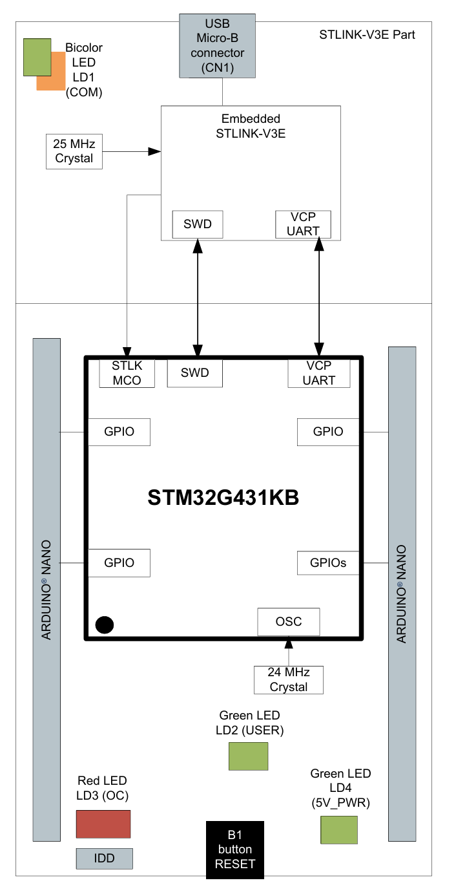
| Block | Feature |
| Power Supply | 1. A host PC connected to CN1 through a USB cable (default setting). 2. An external 5 V USB charger (5V_USB_CHGR) connected to CN1. 3. An external 7 V - 12 V (VIN) power supply connected to CN3 pin 1. 4. An external 3.3 V power supply (3V3) connected to CN3 pin 14. 5. An external 5 V power supply (5V) connected to CN3 pin 4. |
| ADC | includes two 12-bit resolution ADC (up to 23 channels), with given internal reference voltage: 2.048V, 2.5V, 2.9V. For input voltage beyond this range, a external refernce voltage port Vref+ is available. |
| SPI | Three SPI interfaces allow communication up to 75 Mbits/s in master and up to 41 Mbits/s in slave, The 3-bit prescaler gives 8 master mode frequencies and the frame size is configurable from 4 bits to 16 bits. |
| PWM Modulator | Two 16-bit PWM timers dedicated to motor control,''Advanced motor control timer (TIM1, TIM8)'' is available for 4 groups of complementary outputs. Supporting both half and full bridge. |
Peripheral devices - Model Selection
Input Stage - 3.5mm AUX CABLE
Refering to the Evaluation Board EPC9192KIT, also considering the quality of audio signal, the input stage should be designed as a 3.5mm AUX single channel -> XLR. And behind that, connectting an additional R-C filter with cut-off frequency at 500kHz.
| 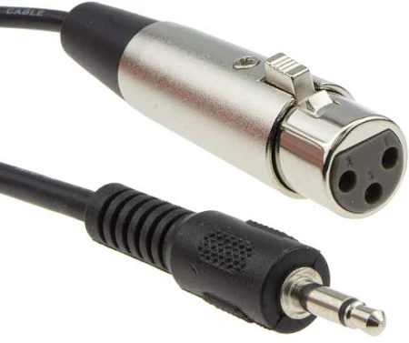 | 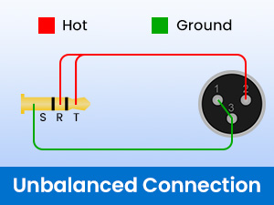 |
The details of both interface are listed as following:
| Interface | Terminal | Ports | Feature |
| 3.5mm AUX (single channel) | Audio Source | GND, Signal | ± 1.5 V(MAX), normally 0.1V-0.8V. |
| XLR (Balanced Input) | Main Board | GND, Positive (Hot), Negative (Cold) | Based on Source |
But the drawback of this cable is, although the XLR belongs to the balanced cable, limitted by the input of 3.5mm aux, it was still unbalanced.
Since the XLR here doesn’t show its own advantages, an alternative way is to use 3.5mm AUX -> 3.5mm AUX.
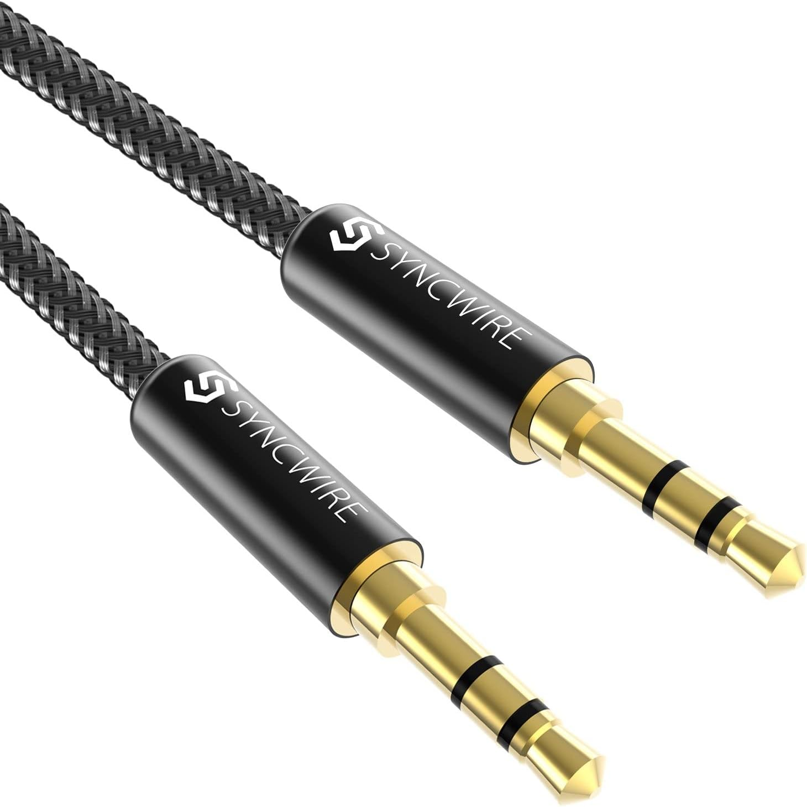
According to the introduction of line-level in Wikipedia, common output of consummer audio product should be -10dbV, aginst 0dbV as reference voltage with 1.414V peak amplitude. However, here we refer to the max. output voltage of $\plusmn 2V$ as the input range of audio signal.
Output Stage - Speaker
This part of content will be discussted later. (110Hz - 5KHz, around 4 $\Omega$ as impedance) -> midrange speaker. But voltage below 48V (normally). Firstly fixed voltage 48V.
And the filter could be a Frequenzweichen (Audio crossover). Audio crossovers are a type of electronic filter circuitry that splits an audio signal into two or more frequency ranges, so that the signals can be sent to loudspeaker drivers that are designed to operate within different frequency ranges.
- Model Selection
OPAMP for 3.5mm AUX
Since the input range is $\pm 2V$, a DC bias is here necessary for the implement of ADC. OPA1656 is here available. It offers low offset and long-term stability by means of a lownoise, chopperless, bipolar‑input‑transistor amplifier.
The parameter of it is:
| Specification | Details |
| Ultra-low noise |
Voltage noise: 2.9 nV/√Hz at 10 kHz Current noise: 6 fA/√Hz at 1 kHz |
| Low distortion |
0.000029% (-131 dB) at 1 kHz 0.000035% (-129 dB) at 20 kHz |
| High open-loop gain | 150 dB |
| High output current | 100 mA |
| Low input bias current | 10 pA |
| Slew rate | 24 V/μs |
| Gain bandwidth product | 53 MHz |
| Rail-to-rail output | Yes |
| Wide supply range | ±2.25 V to ±18 V or 4.5 V to 36 V |
| Quiescent current | 3.9 mA per channel |
The configuration is:
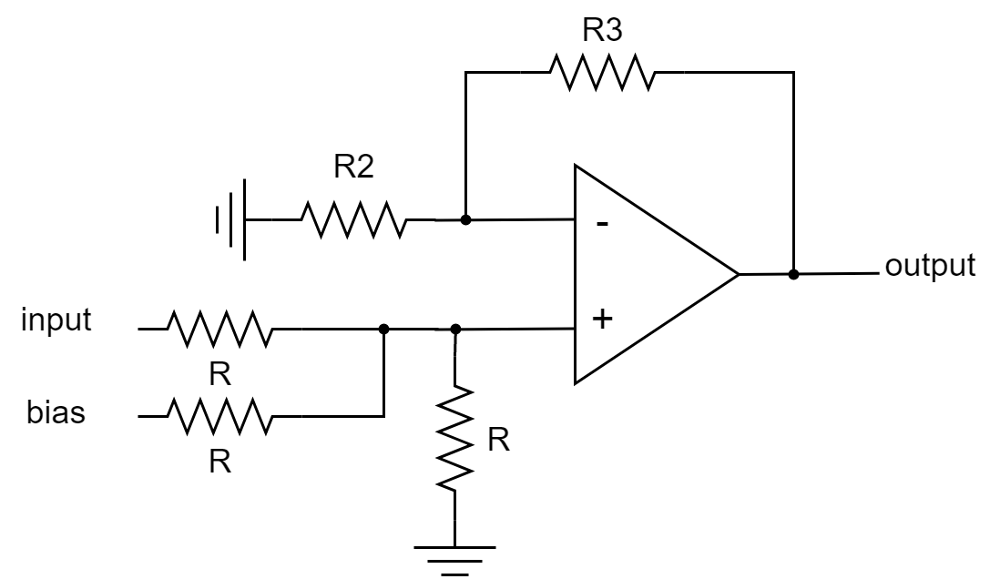
Here, the output is equal to:
In case that the offset $V_{bias} = 3.3V$, which is provided by LDO LP5900 from TI connecting to the 5.5V USB Power Supply.. In order to let $V_{out} \in [0V, 2.9V] $, which corresponds to the maximum internal reference volatage of ADC.
Here a available solution is:
So that:
Then another internal reference volatge of ADC with 2.048V is perfectly matched.
Considering both circuits with only LP-filter or only LDO performs not so well either in low frequency or high frequency:
| 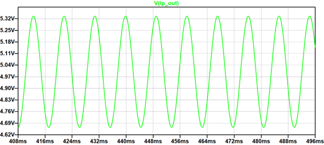 | 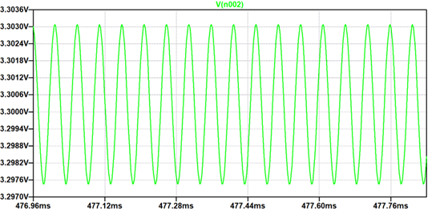 |
It could be better if we combine them together with the shematice below:

Connecting with a low-pass filter with cutoff-frequency of 1kHz, plus a LDO LP5900. The performance is therefore much more improved in both low and high frequency:
| max. Distortion in 110Hz | max. Distortion in 20kHz |
| 0.01% | 0.008% |
Multi-level BOOST Converter
A Multi-level BOOST Converter group can be here implemented to improve the performance of a stabil DC bus.
Since we use a full-bridge circuit to realize the final design, one group of DC bus is enough.
According to the document of Evaluation Board EPC9192KIT:
The specific value of power supply depends on several factors:
- the running mode of audio amplifier: Class D or Class D+H.
- maximum voltage requirement of the speaker.
But here we use fixed 48V as output with a 12V external voltage supply by phoenix contact, which is suitbale for most of the midrange speaker. For further improvement of class H, the output level could be adjustable.
The average power for a midrange speaker should be 20W of RMS and 40W for maximum, with $Z = 8 ohms$, so the RMS and max. current for this could be:
assuming that all power is supported by the DC bus.
Several Loss indicators will be used to choose the best transistor firstly for the boost converter:
- Gate charge Loss
- Overlap Loss
- Conducting Loss
- FOM
with following equations (for both transistors together) :
Cause here we have 2 same GaN transistors, which operate alternatively, so some losses can be easily multiplied by 2.
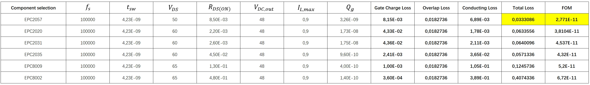
According to the given sheet after caculating, EPC2057 could be the best one with lowest loss and lowest FOM.
To choose a suitable Boost driver (without gate driver), there are several ways to realize it:
conventional method with feedback using resistive divider -
TPS4306x (TI):
The FB pin works as Error amplifier input and feedback pin for voltage regulation. Connect this pin to the center tap of a resistor divider to set the output voltage. However, not available for multilevel-boost or for real-time adjustment with $\mu$C.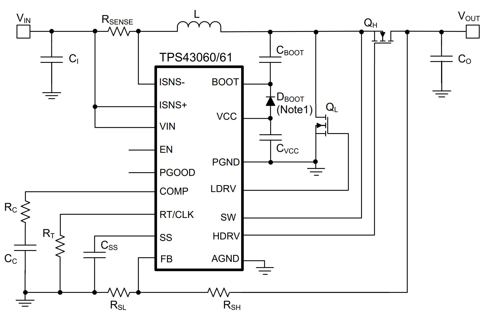
Method with feedback using $\mu$C -
LM251772:
This type of Boost converter controller (external transistor) enables progammable dajust of duty circle with I2C Communication. The shortcomming of it is that we only uses the topology of Boost converter but it supports multiple topology with some other functionalities. The implement of this type of chip causes waste of resource.
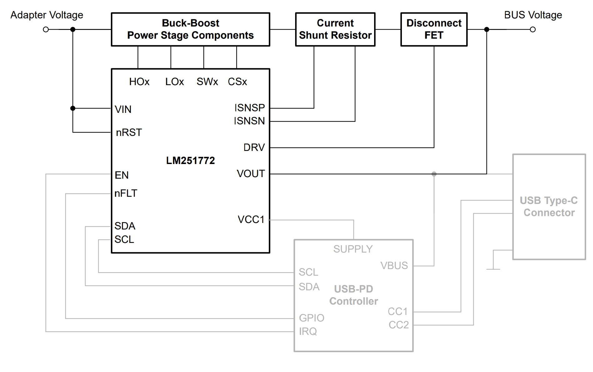
Method with self-building Boost converter with feedback using $\mu$C:
Modeling based on a stable state, using smale signal to construct the model.
To choose a suitable GaN switch, several conditions should be taken into consideration:
- consistent max $V_{DS}$ aginst $V_{DC}$.
- acceptable FOM and switching loss plus conducting loss.
- simple package structure.
Afterwards, don’t forget to 10% safty redundancy for ripple and 10% design redundacy for Voltage spike.
In this project, EPC2306 is a matched solution with following feature:
| VDS | max. Ron | FOM |
| 100V | 3.1mΩ | 3.81e-11 |
To choose a suitable Inductor, according to the manual book of Texas Instrument Basic Calculation of a Boost Converter's Power Stage (Rev. D), we can use the following equation to estimate:
Assuming a middle coefficient 0.3 and $I_{out(max)} = 0.9A$, $L = 83.3 \mu H$.
To choose a Resistive Divider for feedback, according to the manual book of Texas Instrument Basic Calculation of a Boost Converter's Power Stage (Rev. D), the current through the resistive divider shall be at least 100 times as big as the feedback bias current:
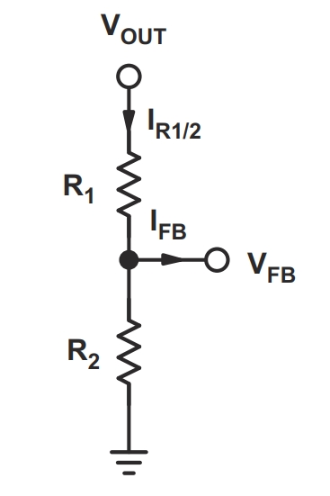
This constrains is valid with a huge input impedanz of ADC.
To choose a Input Capacitor, according to the manual book of Texas Instrument Basic Calculation of a Boost Converter's Power Stage (Rev. D), the minimum value for the input capacitor is normally given in the data sheet of driver/controller. This minimum value is necessary to stabilize the input voltage due to the peak current requirement of a switching power supply. The best practice is to use low equivalent series resistance (ESR) ceramic capacitors.
To choose a Output Capacitor, according to the manual book of Texas Instrument Basic Calculation of a Boost Converter's Power Stage (Rev. D), low ESR capacitors is also a best solution. Since here we implement a feedback loop, a capacitor beyond the minimum value of data sheet’s requirement is enough. With external compensation, the following equations can be used to adjust the output capacitor values for a
desired output voltage ripple:
For communication, SPI can be taken into consideration. Compared to I2C or other types of serial communication, SPI is more suitable for communicating between different boards with high speed and low error-rate. Meanwhile simplier configuration and takes up less space compared with parallel communication.
In some cases, an additional opamp for ADC is also necessary.
Bridge based Amplifier
The selection and corresponding parameters will be listed below:
- GaN:
EPC2302, working in 600kHzVDS RDS(on) 100 V 1.4 mΩ typical, 1.8 mΩ max
Compared with EPC2307, which is used in the Evaluation Board EPC9192KIT:
| VDS | RDS(on) |
| 200 V | 10mΩ |
EPC2302 is better with lower switching loss, however rely more on the design. It means, the voltage of DC bus should be lower designed to match its lower breakdown voltage.
gate driver: LMG1205 (TI)
Power switch Input supply voltage (min) (V) Input supply voltage (max) (V) Peak output current (A) Operating temperature range (°C) Undervoltage lockout (typ) (V) Rating Propagation delay time (µs) Rise time (ns) Fall time (ns) Iq (mA) Input threshold Channel input logic GaNFET, MOSFET 4.5 5.5 5 -40 to 125 4 Catalog 0.035 7 3.5 0.09 TTL TTL ADC: Not needed with a voltage divider.
- communication: SPI
- Filter: L-C low pass filter with Cutoff frequency around 20kHz.
- Isolator: Since this gate driver uses a boostrap structure, so an isolator is not necessary.
There are typically 2 solutions to design a bridge based amplifier:
| Advantage | Disadvantage | |
| Full bridge | Need only one VDD and supports freewheeling. | one additional group of transistors, more complicated driving strategy. |
| Half bridge | Easier controlling strategy with only one group of transistor. | Worse performance caused by higher power loss and more harmonis. Need both VDD and -VDD. |
Here we use the Full Bridge as our speaker amplifier.
Resource compairation
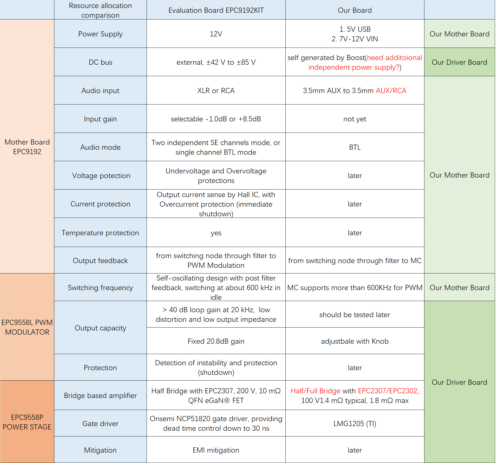